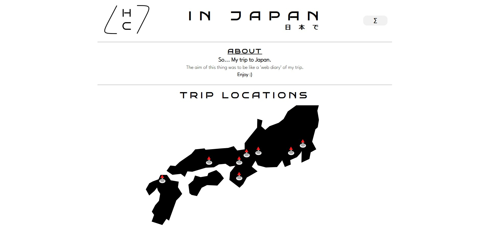

Blog & Project Hub
Write-ups and behind-the-scenes notes from projects and experiments - the longer version of what appears on the homepage.
yt2library: A Rust TUI for YouTube Downloads
Terminal search, MP3/MP4 downloads, and an install script that wires up yt-dlp.
Read more
Raspberry Pi Home Server Setup
A low-power homelab Pi for Linux admin, security experiments, and always-on services at home.
Read more
Redesigning My Portfolio as a Field Journal
From project cards to a field-journal layout - homepage highlights, blog hub for long-form write-ups.
Read more
Building AuthSecurity: Django, Sessions, and TOTP 2FA
Sessions, CSRF, and TOTP 2FA with Django REST and a vanilla JS frontend - local auth learning project.
Read more
TeraRaidCalc: Type Matchups as a Scoring Problem
Ranking raid counters with type matchups, bulk, and speed — not just super-effective charts.
Read more
NetworkIDS: Sniffing Packets and Surfacing Alerts
Scapy heuristics and a Streamlit dashboard for port scans, floods, and brute-force patterns - local learning IDS.
Read more
FileAnalyser: Hashing, PE Parsing, and VirusTotal
Malware triage in one pipeline - hashing, VirusTotal lookups, PE parsing, optional behavior monitoring, and a dual GUI/CLI workflow.
Read more
Japan Trip Site: Travel Notes as a Static Site
City pages, galleries, and notes - privately hosted for friends and family (no public repo or live link).
Read moreJava Job Scheduler Client: Talking to a C Simulation Server
Java scheduler client for a C simulation server - three allocation algorithms including my Stage 2 Start-Servers design.
Read more
Pure JavaScript Pong: Where I Started
My first shipped project - canvas, game loops, and two-player keyboard input.
Read more